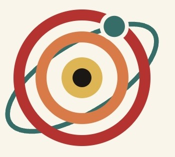
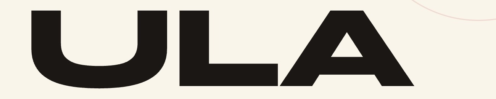
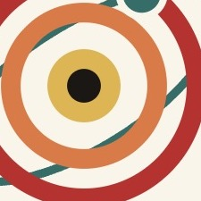
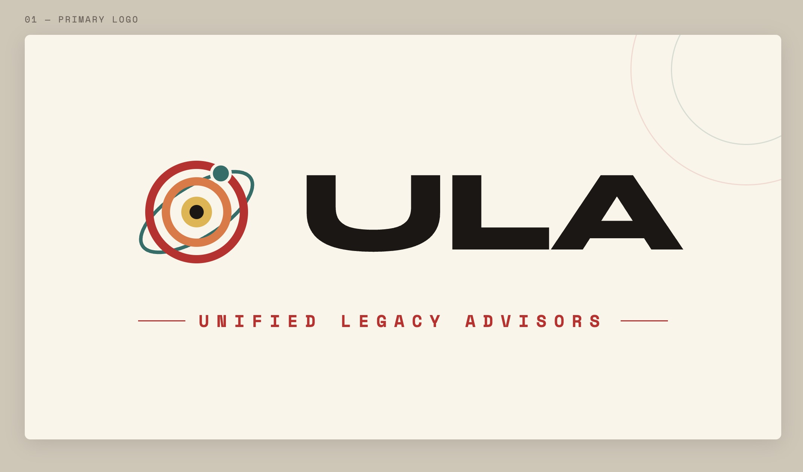

A modern rebrand for Unified Legacy Advisors, an orbital mark, a confident wordmark, and a motion-led identity that makes a wealth firm feel current without losing its gravity.
Overview
Unified Legacy Advisors is a wealth firm built on the long game, so the rebrand had to feel both established and alive. I rethought the identity from the mark out: an orbital symbol for assets kept in steady motion, a bold geometric wordmark, and a warm, confident palette.
Then I gave it movement, an animated logo and a graphics system, so the brand reads as current on a screen as it does on paper.
Inside the identity
Mark · Type · Detail



The Challenge
A wealth brand has to signal stability, but "safe" too often reads as dated. The challenge was an identity with real personality that still feels like somewhere you'd trust with the long term.
My role: I led the rebrand end to end, mark, wordmark, color, motion, and the graphics system.
Creative Process
The graphics system
A kit of icons and motifs, the orbit, the spark, the grid, that stretches the brand well beyond the logo.
"It looks like a firm that's been trusted for years, exactly the read we wanted."
Placeholder, Unified Legacy AdvisorsOutcome
A rebrand that moves: a distinctive orbital mark, a motion-ready identity, and a graphics system that gives Unified Legacy Advisors room to grow.